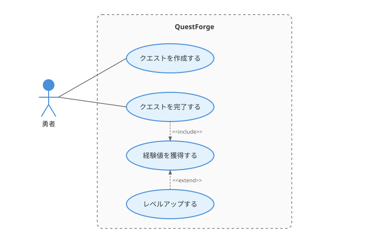
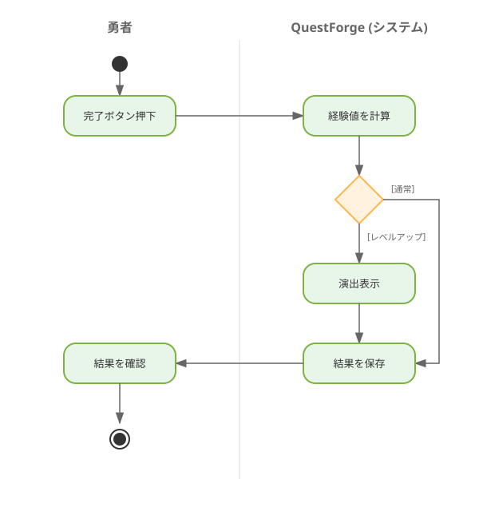

ここまでで、ユーザーの声を聴き（1.1, 1.2）、AIペルソナと対話し（1.3）、ゴールツリーで整理する（1.4）方法を学びました。
ここで、さらに強力な武器を手に入れましょう。図を使えば、認識をより正確に揃えることができます。
「ユーザーがログインして、タスクを追加できる」
この一文を読んで、あなたは何を想像しますか？
同じ言葉を読んでも、人によって想像する「絵」は違います。
そこで登場するのがUML（Unified Modeling Language）——ソフトウェアの世界で長く使われてきた「共通の魔法陣」です。

UMLは1990年代に, 複数のモデリング手法を統合して生まれました。「Unified（統一された）」の名が示すように、異なる流派の図法を一つにまとめたものです。
かつて、ソフトウェアの世界には多くの「賢者（メソッド・エンジニア）」たちが存在し、それぞれが独自の図法を提唱していました。有名なものでは、グラディ・ブーチによる「Booch法」、ジェームズ・ランボーによる「OMT（オブジェクトモデル技術）」、そしてイヴァ・ヤコブソンによる「OOSE（オブジェクト指向ソフトウェア工学）」などがあります。これらは「メソッド戦争」と呼ばれるほど、どの手法が優れているかを競い合っていました。
しかし、1990年代半ば、これら3つの手法の提唱者たちは「協力して、より強力で共通の魔法陣を作ろう」と手を取り合いました。彼らはスリーアミーゴス（Three Amigos）と呼ばれ、彼らがまとめ上げた知恵の結晶こそがUMLなのです。
いわば、古のグリモワール（魔導書）に記された「火」や「水」の紋章のように、誰が見てもその意味が伝わるように約束された「共通言語」なのです。私たちアルケミストにとっては、論理を具現化するための「共通の魔法陣」と言えるでしょう。
UMLには14種類もの図がありますが、すべてを覚える必要はありません。本章では、要求を可視化するための2つの図に絞ります。
| 図の種類 | 目的 | 問いかけ |
|---|---|---|
| ユースケース図 | システムと利用者の関係を俯瞰する | 「誰が何をするのか？」 |
| アクティビティ図 | 処理の流れを詳細に描く | 「どんな順序で進むのか？」 |
UMLは要求分析にも設計にも使えます。しかし、同じ図法でも、フェーズによって描く粒度が違います。
本章では「要求の可視化」に集中し、設計レベルのUML（クラス図、シーケンス図）は第2章で扱います。
ユースケース図は、システムの「外側」から見た機能を描きます。
┌─────────────────────────────────────────────┐
│ QuestForge │
│ ┌─────────────────────────────────────┐ │
│ │ │ │
│ │ (クエストを作成する) │◀───── 勇者
│ │ │ │ (Actor)
│ │ (クエストを完了する) │◀───┘
│ │ │ │
│ │ (経験値を獲得する) │ │
│ │ │ │
│ │ (レベルアップする) │ │
│ │ │ │
│ └─────────────────────────────────────┘ │
│ │
└─────────────────────────────────────────────┘
システム境界構成要素:
| 要素 | 表記 | 意味 |
|---|---|---|
| アクター | 人型の記号 | システムを利用する人や外部システム |
| ユースケース | 楕円 | システムが提供する機能 |
| システム境界 | 四角形 | システムの範囲 |
| 関連 | 線 | アクターとユースケースの結びつき |
ユースケースは「〜する」という動詞形で書きます。
推奨する書き方:
さらに明確にできる書き方:
QuestForgeのユースケースを整理してみましょう。
┌──────────────────────────────────────────────────────────┐
│ QuestForge │
│ │
│ ┌──────────────────┐ │
│ │ クエストを作成する │◀────────┐ │
│ └──────────────────┘ │ │
│ │ │ │
│ │ <<include>> │ │
│ ▼ │ │
│ ┌──────────────────┐ │ ┌─────┐ │
│ │ 難易度を設定する │ ├──────│ 勇者 │ │
│ └──────────────────┘ │ └─────┘ │
│ │ │
│ ┌──────────────────┐ │ │
│ │ クエストを完了する │◀────────┤ │
│ └──────────────────┘ │ │
│ │ │ │
│ │ <<include>> │ │
│ ▼ │ │
│ ┌──────────────────┐ │ │
│ │ 経験値を獲得する │◀────────┘ │
│ └──────────────────┘ │
│ │ │
│ │ <<extend>> │
│ ▼ │
│ ┌──────────────────┐ │
│ │ レベルアップする │ │
│ └──────────────────┘ │
│ │
│ ┌──────────────────┐ │
│ │ 進捗を確認する │◀───────────────────────┐ │
│ └──────────────────┘ │ │
│ │ │
│ ┌────┴────┐ │
│ │ギルドマスター│ │
│ └─────────┘ │
└──────────────────────────────────────────────────────────┘関係の種類:
| 関係 | 表記 | 意味 |
|---|---|---|
| include | <
|
必ず含まれる処理（共通処理の抽出） |
| extend | <
|
条件によって追加される処理（オプション） |
「クエストを完了する」には「経験値を獲得する」が必ず含まれる（include）。 「経験値を獲得する」と「レベルアップする」は、経験値が閾値を超えた場合のみ発生する（extend）。
アクティビティ図は、処理の流れを描きます。フローチャートに似ていますが、並行処理も表現できます。
●（開始）
│
▼
┌───────────────┐
│ クエストを選択 │
└───────────────┘
│
▼
◇（分岐）
／ ＼
／ ＼
[難易度:高] [難易度:低]
│ │
▼ ▼
┌─────┐ ┌─────┐
│確認表示│ │即開始│
└─────┘ └─────┘
│ │
└────┬─────┘
│
▼
┌───────────────┐
│ クエスト実行中 │
└───────────────┘
│
▼
◎（終了）構成要素:
| 要素 | 表記 | 意味 |
|---|---|---|
| 開始ノード | ●（黒丸） | 処理の開始点 |
| 終了ノード | ◎（二重丸） | 処理の終了点 |
| アクション | 角丸四角形 | 具体的な処理 |
| 分岐 | ◇（ひし形） | 条件による分岐 |
| フロー | 矢印 | 処理の流れ |
複数のアクターが関わる処理では、スイムレーンで責任範囲を明確にできます。
│ 勇者 │ システム │
│ │ │
│ ● │ │
│ │ │ │
│ ▼ │ │
│┌──────────┐ │ │
││クエストを選択│ │ │
│└──────────┘ │ │
│ │ │ │
│ │───────────┼──▶ │
│ │ ▼ │
│ │┌──────────┐ │
│ ││難易度を判定│ │
│ │└──────────┘ │
│ │ │ │
│ ◀───────────┼───│ │
│ │ │ │
│ ▼ │ │
│┌──────────┐ │ │
││確認ダイアログ│ │ │
│└──────────┘ │ │
│ │ │ │スイムレーンを使うと、「この処理は誰の責任か？」が一目でわかります。
│ 勇者 │ QuestForge │
│ │ │
│ ● │ │
│ │ │ │
│ ▼ │ │
│┌───────────┐ │ │
││完了ボタン押下│ │ │
│└───────────┘ │ │
│ │ │ │
│ │───────────┼──▶ │
│ │ ▼ │
│ │┌───────────┐ │
│ ││経験値を計算│ │
│ │└───────────┘ │
│ │ │ │
│ │ ▼ │
│ │ ◇（分岐） │
│ │／ ＼ │
│ │[レベルアップ] [通常] │
│ │ │ │ │
│ │ ▼ │ │
│ │┌─────┐ │ │
│ ││演出表示│ │ │
│ │└─────┘ │ │
│ │ │ │ │
│ │ └───┬────┘ │
│ │ │ │
│ │ ▼ │
│ │┌───────────┐ │
│ ││結果を保存 │ │
│ │└───────────┘ │
│ │ │ │
│ ◀───────────┼───────│ │
│ │ │ │
│ ▼ │ │
│┌───────────┐ │ │
││結果を確認 │ │ │
│└───────────┘ │ │
│ │ │ │
│ ◎ │ │テキストで要求を伝え、AIにUML図を生成させることができます。
プロンプト例: ```text 以下の機能要求から、PlantUML形式でユースケース図を生成してください。
機能要求:
UMLはグラフィカルなツールで描くこともできますが、PlantUMLというテキストベースの記法を使えば、コードのようにバージョン管理できます。
@startuml
left to right direction
actor 勇者
actor ギルドマスター
rectangle QuestForge {
usecase "クエストを作成する" as UC1
usecase "クエストを完了する" as UC2
usecase "経験値を獲得する" as UC3
usecase "レベルアップする" as UC4
usecase "進捗を確認する" as UC5
}
勇者 --> UC1
勇者 --> UC2
UC2 ..> UC3 : <<include>>
UC3 ..> UC4 : <<extend>>
ギルドマスター --> UC5
@endumlこのテキストをPlantUMLツールに通すと、自動的に図が生成されます。
描いた図をAIにレビューしてもらいましょう。
プロンプト例: ```text 以下のユースケース図をレビューしてください。
[PlantUMLコードをここに貼り付ける] ```
QuestForgeを使う「人」や「外部システム」を列挙しましょう。
1.4節のゴールツリーを参考に、システムが提供する「機能」を動詞形で書き出します。
以下のユースケース一覧から、PlantUML形式のユースケース図を生成してください。
アクターとユースケースの関係も適切に設定してください。
**アクター**: 勇者、ギルドマスター
**ユースケース**: [ステップ2で列挙したもの]ユースケース図は「何があるか」を俯瞰できますが、詳細な振る舞いは表現できません。そこで、各ユースケースに対してユースケース記述を書きます。
## ユースケース: クエストを完了する
**アクター**: 勇者
**事前条件**:
- 勇者がログインしている
- 未完了のクエストが1つ以上存在する
**基本フロー**:
1. 勇者がクエスト一覧を表示する
2. 勇者が完了するクエストを選択する
3. 勇者が「完了」ボタンを押す
4. システムが経験値を計算する
5. システムが勇者の経験値を更新する
6. システムが完了メッセージを表示する
**代替フロー**:
- 4a. レベルアップ条件を満たす場合
- 4a1. システムがレベルアップ演出を表示する
- 4a2. システムが勇者のレベルを更新する
**事後条件**:
- クエストが「完了」状態になっている
- 勇者の経験値が増加している以下のユースケースについて、ユースケース記述を生成してください。
事前条件、基本フロー、代替フロー、事後条件を含めてください。
**ユースケース名**: クエストを作成する
**アクター**: 勇者
**概要**: 勇者が新しいクエスト（タスク）を作成する本章で描いたUML図は、「何をするか」を明確にするためのものでした。
これらは技術的な実装方法には言及していません。データベースの構造も、クラスの設計も、まだ決めていないのです。
第2章では、「どう作るか」を設計するためのUMLを学びます。
| 図の種類 | 目的 | 本書での位置づけ |
|---|---|---|
| ユースケース図 | 何をするか | 1.5節（本章） |
| アクティビティ図 | どう流れるか | 1.5節（本章） |
| クラス図 | どんな構造か | 2.2節 |
| シーケンス図 | どう連携するか | 2.2節 |
要求フェーズで描いた図が、設計フェーズでどのように具体化されていくのか——その過程を楽しみにしていてください。
これで第1章「ドメインという名の異世界探検」は完結です。あなたは要求工学の基本——聴く、整理する、可視化する——を身につけました。
第2章では、いよいよ「設計」の世界に足を踏み入れます。
# ユースケース図の生成
以下の機能一覧から、PlantUML形式でユースケース図を生成してください。
アクターの識別と、include/extend関係の設定も行ってください。
**システム名**: QuestForge
**機能一覧**:
- ユーザー登録
- ログイン
- クエスト作成
- クエスト完了
- 経験値獲得
- レベルアップ
- バッジ獲得
- 進捗確認（管理者のみ）# アクティビティ図の生成
以下の処理フローを、PlantUML形式のアクティビティ図で表現してください。
スイムレーンを使って、勇者とシステムの責任を分けてください。
**処理名**: クエスト作成フロー
**フロー**:
1. 勇者がクエスト名を入力
2. 勇者が難易度を選択
3. システムが入力を検証
4. 入力に不足がある場合、案内メッセージを表示して1に戻る
5. システムがクエストを保存
6. システムが完了メッセージを表示# ユースケース記述の生成
以下のユースケースについて、詳細なユースケース記述を作成してください。
**ユースケース名**: レベルアップする
**アクター**: 勇者（システムが自動実行）
**トリガー**: 経験値が次のレベルの閾値を超えた時
以下の項目を含めてください：
- 事前条件
- 基本フロー（5〜8ステップ）
- 代替フロー（2つ以上）
- 例外フロー
- 事後条件
- ビジネスルール